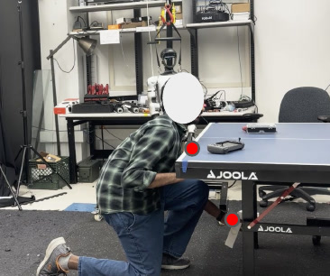
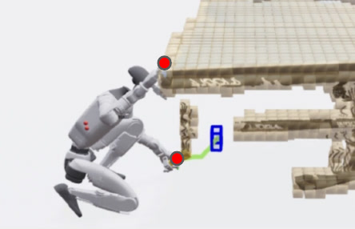
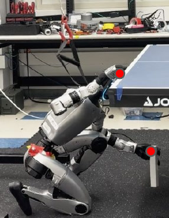
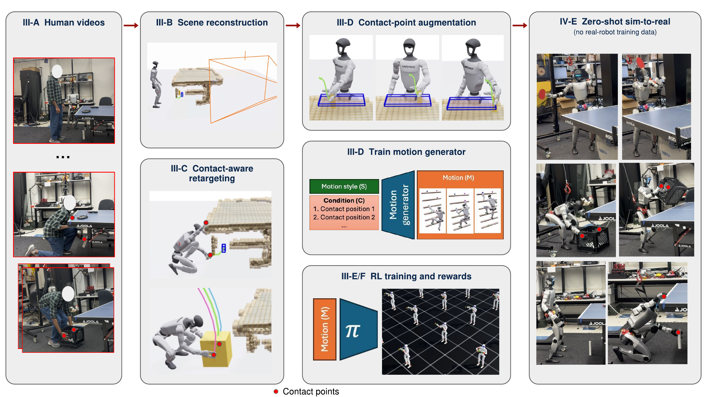

The gap
Contacts get lost in translation
Contact-rich skills are defined by where, when and how fast contact happens. Those contacts rarely survive the move from a human body to a robot’s.
Learning humanoid interactive skills
Learn from human videos.
Preserve the contacts that make a skill work.
The idea

The gap
Contact-rich skills are defined by where, when and how fast contact happens. Those contacts rarely survive the move from a human body to a robot’s.

The idea
VICAR retargets the whole motion while treating contact poses, speed and collision clearance as top priorities, so the interaction stays intact.

The result
Learned skills transfer zero-shot to a real humanoid and adapt to new contact points at runtime.
Shown: the under-table pickup, from human video to retargeted motion to the real robot.
Third-person human videos offer a scalable alternative to task-specific reward engineering, teleoperation, and manually scripted demonstrations for humanoid loco-manipulation. VICAR learns interactive humanoid skills while preserving world-frame contact poses, motion speed, and collision clearance.
From observation to execution
Reconstruct the scene, preserve the interaction, and learn a reference that adapts.

Human motion and task-relevant scene geometry from video.
Preserve global contacts, motion speed, and collision clearance.
Vary contact locations while retaining the demonstrated skill.
Track contact-conditioned references on the humanoid.
01 — Table tennis
Watch the humanoid execute each serve, from simple strokes to spin.
Choose a serve with the arrows or dots, then press play. Swipe to browse on mobile.
02 — Beyond serving
Human demonstrations and robot execution, side by side.
03 — Explore in 3D
Choose a skill, explore its contact settings, and replay the adapted motion.
Explore the saved G1 motion in an interactive 3D scene.
Powered by Viser · loads on demandOrbit, zoom, and use the timeline to inspect each motion.